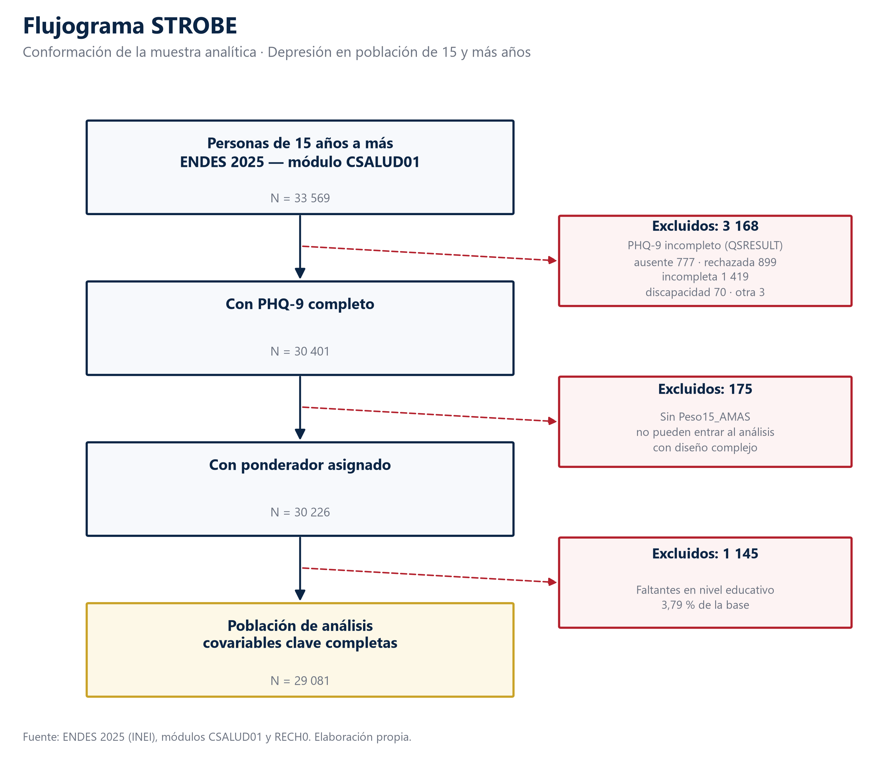

¿Qué nos dicen los datos?
Hasta aquí hemos hablado de qué es la depresión y por qué importa. A partir de esta página hablamos de lo que muestran los datos, y conviene explicar primero de dónde salen.
La encuesta
La Encuesta Demográfica y de Salud Familiar es el operativo estadístico más grande que el INEI dedica a la salud de los hogares peruanos. Se levanta todos los años, recorre los 25 departamentos y pregunta por salud reproductiva, nutrición, enfermedades crónicas y, en el módulo que usamos aquí, salud mental.
Para este boletín usamos la ola de 2025: el cuestionario de salud aplicado a una persona de 15 años a más seleccionada en cada hogar, cruzado con el registro del hogar, que aporta la ubicación y las variables del diseño muestral.
Por qué no es una encuesta cualquiera
La ENDES no elige a la gente al azar de una lista nacional. Divide el país en estratos, sortea conglomerados dentro de cada estrato y visita viviendas dentro de cada conglomerado. Eso abarata el operativo, pero tiene una consecuencia estadística: las personas de un mismo conglomerado se parecen entre sí, y tratarlas como independientes daría intervalos de confianza demasiado estrechos.
| Elemento del diseño | Valor |
|---|---|
| Tamaño de muestra analítica | 30,226 |
| Conglomerados (UPM) | 3,251 |
| Estratos | 240 |
| Estratos con un solo conglomerado | 18 (tratados con centrado) |
| Ponderador | Peso15_AMAS / 1,000,000 |
| Suma de pesos escalados | 36,172.8 |
| ¿Es factor de expansión? | No — ponderador relativo |
| Efecto de diseño (deff, ref. wr) | 3.093 |
| Tamaño de muestra efectivo | 9,774 |
| Método de varianza | Linealización de Taylor |
El efecto de diseño no es igual para todo. Las características que se agrupan geográficamente arrastran más:
| Variable | Efecto de diseño | Muestra efectiva |
|---|---|---|
| Diabetes diagnosticada | 3.77 | 8 012.27 |
| Altitud de residencia | 3.73 | 8 107.05 |
| Consumo frecuente de alcohol | 3.35 | 9 025.33 |
| Síntomas leves o más (PHQ-9 ≥ 5) | 3.27 | 9 246.01 |
| Puntaje PHQ-9 | 3.26 | 9 269.70 |
| Edad | 3.25 | 9 292.07 |
Quiénes quedaron dentro
De las 33 569 personas entrevistadas, no todas pudieron entrar al análisis:
| Etapa | Personas | Salen | Motivo |
|---|---|---|---|
| Personas de 15 años a más en CSALUD01 2025 | 33569 | 0 | nan |
| Excluidos: PHQ-9 incompleto | 30401 | 3168 | Entrevista ausente, rechazada, incompleta o por discapacidad (QSRESULT) |
| Excluidos: sin ponderador Peso15_AMAS | 30226 | 175 | Sin factor de ponderación asignado; no pueden entrar al análisis con diseño complejo |
| Población de análisis (covariables clave completas) | 29081 | 1145 | Faltantes en alguna de: edad, es_mujer, educacion_grupo, area, region_natural |
De 33 569 entrevistas a 30 226 personas analizables
Nueve de cada cien entrevistas no completaron el cuestionario de salud mental, casi siempre porque la persona no estaba, rechazó responder o dejó la entrevista a medias. Otras 175 no traían el factor de ponderación necesario para estimar. Cada exclusión está contada, porque una muestra que se encoge sin explicación es una muestra en la que no se puede confiar.
